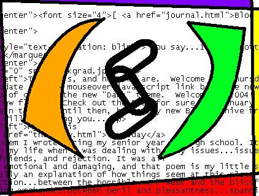

This weeks and last week's titles are take from the very strange garbage original "Alien Sex Fiend." Certainly, none of you have read this. No! It's alright, I've already forgiven you. I suppose you'll just have to live your life without that song, and it's ok. It's possible to achieve fulfillment without it, but for me, it's fun. The Alien Sex Fiend is an alter ego, and hopefully, something I hope to achieve to become. In my messed up world, this all makes sense to me, I assure you. We'll settle this now. Consider this week to be the 11th hour, the pit stop before the mobilization.
I know, boring, so to make your time alittle worth while, I'll give you this. Cherish it.


Mysterious - Your ideal guy is suave and mysterious. He's cool in all that he does and holds an edgy charm that attracts you to him. Turn ons: He's always coming up with some cool new way to suprise you. Turn offs: You don't always know what he's doing, where he is - or who he's with. Watch him.
What is your ideal type of guy? (With Pictures)
brought to you by Quizilla
Turns out I have a job at Taco Mac afterall. What do you know. AND Jason doesn't work there anymore. Double BONUS. See, I'm not a reject afterall. Ashley said something about them talking about me being a good worker and all. Ah, some validation. That's nice. I can start working anyday now.
Probably won't. Oh well, I didn't plan on serving over the break anyway, but it's a comfort to know that I could. You should see me in my new sun glasses! I'm dreamy...
As for now, I'm going to get ready to stay over at John's house. Matt's going to be there, I haven't seen him in a while (though I've been talking to him plenty). I wonder if I get annoying? Probably, but it's nice to know someone can put up w/ me. Later folks. Miss you.
Internet shopping is dreamy...I got a present for Matt, and I got me something for my cell phone, and other random things. My goal is to somehow acquire the "Breaking Up The Girl" keychain from 2002. One day, I will have it.
Sounds like I'll be going to the Krush Girls on New Year's. I guess Buckhead would be alittle ambitious for Missy and I. Oh well, I just hope I'm not completly worn out for work on Thursday. I don't really care, contrary to last year, I'm not really counting down to come back to UGA. I realize I'm going to be very busy, and I want to do very well.
I had a dream the other night that I was doing Biology homework again. I think that was the last time that I really accomplished something academically. I would listen to 99X in my room and outline chapters for hours each afternoon before class. I remember when we took the photosynthesis test, Ms. Caylor (my nemisis at the time) was so pissed to give me a 98. I would always nap during her lectures on our notes, I think it really pissed her off. I was certainly a fool in her class, I probably deserved some of her bitchiness. Despite the whole ordeal, I got a 4 on the AP test, my best grade. It was nice, did alot for me here at UGA, I avoided the whole science pitfall alot of my friends had to endure. I wish I could have a moment like that again.
Also, despite my limited knowledge in football, I'm pleased to hear Spurrier resigned. I guess Georgia fans will be happy. Or...um, maybe I don't know what I'm talking about.
Maybe Spurrier was fired...certainly you realize I knew he resigned from the Gators last year. I'm not stupid or something.
Broke with tradition and actually did something for New Year's Eve. The beautiful Missy came to pick me up at Rich's and we proceeded to her house to be harassed by her parents. They gave me pizza and forced Missy to eat a steak. She was not happy, apparently she doesn't like it when people force her to eat food. I don't know about you, but I would love to eat a steak any day...I guess. Well, we left to get Matt and I found his house pretty well. So smart I am.
We went to Athens after stopping by Matt's friend's party. I had lots of Skittles and Reese's Pieces there...delicious. We went to Sam's Package and got the night's refreshments. Wow, opening that bottle of Everclear...what was I thinking?! I opted for Coca-Cola instead of Vanilla Coke because since last semester's incessant Vanilla Everclear drinks, I've started to cringe at the slightest hint of vanilla, anticipating that sharp, disgusting pain at the back of my throat which soon becomes a numbing and pleasant buzz.
Ah, and what a buzz it was. I remember when it hit, seeing Missy, Matt, and Claire sitting on the couch...so pretty. I wanted them all, all for me. It was wonderful! I have never really hit on Claire before, and I really couldn't do much this time around, you know, with her boyfriend sitting right there. Damnit. Well, we saw the ball drop and I got to kiss Matt and Missy...but Matt got to Missy first, that bastard! So we left and went to the 40 Watt, but the Krush Girls were sold out! Missy dragged us to Firehouse instead and I will not be going there ever again. I don't appreciate them throwing my boyfriend onto the ground. Well, I waiting outside for maybe fifteen minutes trying to call Matt when Missy signaled to me, her hands all over the random guy of the night. She went home and I went to fetch Matt (in my beloved car). We all went to bed, but I'm glad that at least my New Year's date didn't have an expiration date ;-)
I had to wake up at 8 a.m. New Year's Day for Missy to drive me back to Rich's. I worked from 9:45 until 6 and went to my aunt's for New Year's dinner. It was delicious, though I think she put sour cream in the mashed potatoes and it about made me vomit...I had to psych myself out of that. After we got home, I tried to stay awake, but it wasn't happening. I went to bed early and had disturbing dreams about bad grades. Let's hope that isn't a prediction. Oh my God, it just occured to me that if it was, that would be horrible! A prophetic dream on New Year's Day. Please let that not be. I thing I'll be ok. In the dream, I think I was drunk, and I saw my report card on a television. And when would I ever take 6 classes?
For now, I think I'll make some French toast. Can't get enough. So, one more day until the update! I suppose tonight I'll be uploading ;-)
"Burn down the disco, hang this DJ
'Cause the music they constantly play
Says nothing to me about my life..."
"Hang The DJ"
The Smiths
I'll make the last one short, or I'll try.
I spent the day with my cousin today and I had a wonderful time. I don't get a chance to see her that often, and we went to Phipps and got to talk about alot of things. She's so smart, so sophisticated, so mature. Knowing her years ago, I may have envied her for all that she had, but since she's went to college and since she's had to endure her parents difficult divorce (just like mine), she's become such an amazing person. She's got a very bright future ahead of her, and I really do want to meet her boyfriend. I have the best cousin.
I came home and felt very good. I'm getting a ride to work tomorrow. Missy let me use her name to log onto the Internet so I could upload my website and get my rent information. I may have made Matt feel better. Also, talked up with Charlie. What's up with that? Such an amazing time...
So, for now, we'll look back on the Fall and think nice things. We'll remember Missy and her men. We'll remember birthday parties and how we wished we remembered more after we got shitfaced. We'll remember the people we got to know better (Cat, Nathan, Mary-Kate, Marilia), and the people we never knew until now (Erin, Maggie, April, Alex). We'll think of it all, and we'll probably hear that song "Stacy's Mom" in our head when we're thinking about it, because, God-damnit, it's never going to go away! Maybe it's sexy, you know...older women (surprising that my cousin was shocked to hear about the making out I do w/ women, where's she been?) So, yah, come back on January 11th and I'll have something new for you.
For now, do something productive.